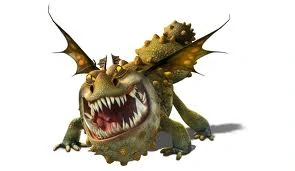

Groncle
Introduccion
Clase: Piedra
Habilidad/es: Posee una piel muy resistente, Fuego de rocas producidas con su estómago (lava), mandíbula muy fuerte, el poder y color de la lava puede cambiar según el tipo de rocas que consuma, rodar formando un tipo de esfera con picos, gran sentido del olfato y audición, cola con picos
Hábitat: Bosques, cuevas
¿Se puede entrenar? Sí
Ataque: 8
Velocidad: 4
Armadura: 20
Poder de fuego: 14
Límite de disparos: 6
Veneno: 0
Mandíbula: 8
Sigilo: 5
